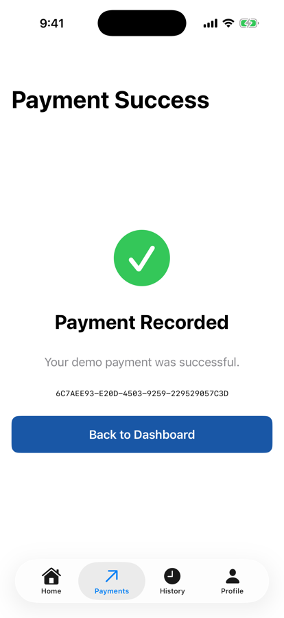
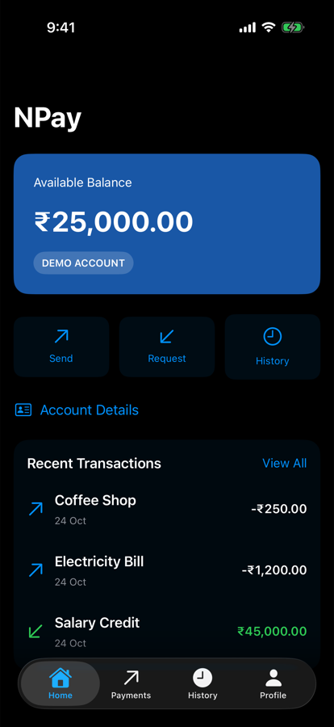
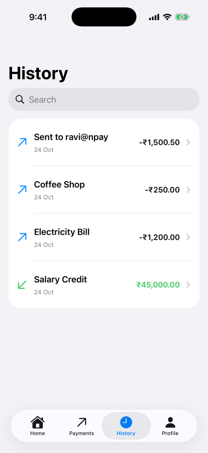

Unit 03 · Lesson 3.12
NPay Final Integration
& Architecture
Eleven lessons, one running app. Who owns what, and what happens when a payment goes through.
Lesson 3.12 · Outcomes
By the end, you will be able to explain
Map every Unit 3 concept to an NPay feature
Draw NPay’s architecture: three owners, four tabs
Trace a payment from keystroke to dashboard
Place each piece of state with the narrowest owner
Verify the integrated app against a checklist
Name the limitations Unit 4 addresses
Lesson 3.12 · Where we are
Today: the whole of Unit 3, working together
Unit 03 · Advanced SwiftUI & Navigation
Part 1
The finished NPay
Eleven lessons in one app
Part 1 · Our final NPay milestone (section 1)
One app, four tabs, real navigation

Home: ₹25,000.00

Payments: review sheet
- Balance card and quick actions
- Recent transactions
- Home, Payments, History, Profile
- Native navigation and sheets
- Money as integer paise
- Shared state with separate owners
Part 1 · Complete Unit 3 feature inventory (section 2)
Every lesson left something in the app
| Lesson | Concept | Integrated NPay feature |
|---|---|---|
| 3.1 | NavigationStack | Screen navigation |
| 3.2 | Typed routes | Programmatic payment-success navigation |
| 3.3 | TabView | Four top-level tabs |
| 3.4 | Sheets and alerts | Payment review |
| 3.5 | State preservation | Payment drafts survive tab changes |
| 3.6 | Animations | Balance and success feedback |
| 3.7 | Reusable components | NPay design system |
| 3.8 | Adaptive layout | Responsive quick actions |
| 3.9 | Environment | Appearance preferences |
| 3.10 | Accessibility & localization | Accessible controls, translated resources |
| 3.11 | Performance | Lazy transaction history and search |
| 3.12 | Integration | Complete multi-screen NPay |
Part 2
The final architecture
Three owners, four tabs
Part 2 · The final architecture (section 3)
Navigation, data and preferences: separate owners
@State private var router = NPayRouter() @State private var store = NPayStore() @State private var preferences = NPayPreferences()
- Each kind of state has its own owner
- Prepares the Unit 4 MVVM refactor
Part 2 · One responsibility each (section 4, part 1)
What each component must never do
| Component | Does | Never |
|---|---|---|
| NPayRouter | where the user is | never deducts money |
| PaymentReviewSheet | shows a snapshot, asks to confirm | never owns the balance |
| BalanceCard | displays a balance | never processes a payment |
| NPayStore | applies the demo payment | never decides navigation |
First three rows from the text; the NPayStore row is ours, from the same code.
- A bug has one place to live
- Each piece can change, and later be tested, alone
Part 3
One payment, end to end
₹1,500.50 to ravi@npay
Part 3 · Trace a complete payment (section 4)
Ten steps through the owners
Step 1 is the text’s; steps 2–10 are ours, read from NPay’s code (only the first step of the text’s stepper was shared).
Part 3 · The trace, printed (section 4)
What each owner held, step by step
typed: draft ("ravi@npay", "1500.50") · balance 2,500,000
review: sheet presented · store unchanged
confirm: balance 2,349,950 · transactions 3 → 4
draft ("", "") · sheet gone
paymentsPath [.paymentSuccess]
done: tab .home · paymentsPath []
- Only the store’s numbers changed money
- Only the router’s path changed the screen

Payment success

Home: ₹23,499.50
Part 3 · Three kinds of state (section 4)
Different state, different owners
| State | Owner | Example |
|---|---|---|
| Business / demo state | NPayStore | Balance, transactions |
| Navigation state | NPayRouter | Selected tab, route paths |
| Presentation state | PaymentsScreen | Review sheet visibility |
- Money moved in the store
- Screens moved in the router
- The sheet came and went in the screen
- Less coupling
- Easier debugging
Part 4
The SwiftUI runtime
From state to pixels
Part 4 · What the SwiftUI runtime does (section 5) · conceptual
We change state; SwiftUI updates the interface
SwiftUI’s exact reconciliation and rendering are not publicly specified.
balancePaise -= amountPaise- Home showed ₹23,499.50 on its own
- Change the state
- Views describe the UI for that state
- SwiftUI coordinates the update
Part 5
State ownership
The narrowest owner that works
Part 5 · State ownership (section 6)
Where each value belongs
| Property | Owner | Reason |
|---|---|---|
balancePaise | NPayStore | Shared application data |
transactions | NPayStore | Shared transaction collection |
paymentDraft | NPayStore | Must survive tab switches |
selectedTab | NPayRouter | Top-level navigation |
paymentsPath | NPayRouter | Payment navigation hierarchy |
reviewDraft* | PaymentsScreen | Temporary modal presentation |
focusedField | PaymentsScreen | Local keyboard focus |
showSuccessAnimation* | PaymentSuccessScreen | Temporary visual state |
appearance | NPayPreferences | Shared UI preference |
* In our code: review and showContent.
- Focus needn’t be global
- A balance mustn’t be copied into four tabs
- Narrowest owner that supports the value’s lifetime and sharing
Part 6
Final integration test
Twelve checks on the real app
Part 6 · Simulate a complete transaction (section 7)
₹25,000.00 − ₹1,500.50 = ₹23,499.50
2,500,000
− 150,050
= 2,349,950
- Store: 2,349,950
- Screen: ₹23,499.50
| # | Unit 3 integration check | Run in the simulator |
|---|---|---|
| 1 | Dashboard initially shows ₹25,000.00 | ✓ |
| 2 | Payments accepts a valid recipient and amount | ✓ Review enabled |
| 3 | Review sheet shows the exact payment | ✓ ravi@npay, ₹1,500.50 |
| 4 | Cancelling review preserves the draft | ✓ both fields kept |
| 5 | Confirming records exactly one transaction | ✓ 2 activations → 1 |
| 6 | Success screen after sheet dismissal | ✓ sheet gone first |
| 7 | Dashboard shows ₹23,499.50 | ✓ |
| 8 | History contains the new transaction | ✓ at the top |
| 9 | Draft cleared after success | ✓ both fields empty |
| 10 | Appearance applies across tabs | ✓ dark in all four |
| 11 | VoiceOver identifies important controls | ✓ after our fix |
| 12 | History responsive with a larger dataset | ✓ 50,003 records |
Part 6 · Item 11: VoiceOver can identify important controls (section 7)
The check failed until we fixed it
identifiers: npay.recipientField, npay.amountField, npay.sendButton
fields with an empty label: both
TextField("Recipient ID",
text: $store.paymentDraft.recipient)
.accessibilityIdentifier(
NPayAccessibilityID.recipientField)
.accessibilityLabel("Recipient")
Image(systemName: "checkmark.circle.fill")
.accessibilityHidden(true)fields with an empty label: none
success: “Payment Recorded” | “Your demo payment was successful.”
(no “Selected” checkmark)
- A checklist is only useful if it can fail
- Identifiers serve tests; labels serve people
Part 6 · Items 10 and 12: appearance and a large History (section 7)
Dark everywhere; 50,003 records

Dark, set in Profile

History after the payment
Home dark, Payments dark, History dark, Profile dark
store: 50,003 transactions (+5 MB)
History: 8 rows exposed (lazy List)
search “49999”: Demo Transaction 49999
display frames, 1 s after typing: 60
- Counts, not timings: see 3.11
- Instruments on a device for real numbers
Part 7
Limitations and Unit 4
A working prototype, not the final design
Part 7 · Architecture limitations (sections 5 and 8)
What still needs improvement
| Current implementation | Future improvement | Unit |
|---|---|---|
| NPayStore contains payment rules | Use cases and domain services | 4 |
| Screens access the shared store | Feature ViewModels | 4 |
| UI coordinates some operations | MVVM and dependency injection | 4 |
| Demo transactions in memory | Repositories and persistence | 5–6 |
| Local payment simulation | Backend API; real authentication | 5, 7 |
| Simple error handling | Typed errors, loading states | 4–5 |
| Manual testing | Automated unit, integration and UI tests | 9 |
| One application module | Feature modularization | 12 |
Merged from the text’s two limitation tables; the Unit column is ours, from the curriculum.
- Intentional: Unit 3 taught composition; these motivate Unit 4
Lesson 3.12 · Recap
What to remember
Three owners, four tabs
router, store, preferences; navigation apart from data
Narrowest owner that works
store for shared data, screen for presentation, view for visuals
Verified, end to end
₹23,499.50, one transaction, all 12 checks
Review
Check your understanding
Check your understanding · 1 of 10
Who should own NPay’s shared account balance?
- Each tab independently
- The review sheet
- One shared application state owner
NPayStore: every tab reads the same balance.
Common trap: Copying shared data into each screen.
Check your understanding · 2 of 10
What is the purpose of NPayRouter?
- Payment calculations
- Navigation state
- Currency formatting
Selected tab and paths; it never touches money.
Common trap: Letting navigation code do business work.
Check your understanding · 3 of 10
Why preserve PaymentDraft outside the review sheet?
- To survive review dismissal
- To create a new process
- To avoid using Swift
Edit Details closed the sheet; both fields were kept.
Common trap: Storing input inside a modal.
Check your understanding · 4 of 10
Does LazyVStack automatically fetch transactions from an API?
It creates views lazily; fetching is Units 5–6.
Common trap: Confusing lazy views with lazy data.
Check your understanding · 5 of 10
Why use stable transaction IDs?
- To increase frame rate automatically
- To preserve logical identity
- To create a new navigation stack
Identity is the transaction, not the render pass.
Common trap: Thinking any unique value will do.
Check your understanding · 6 of 10
What is the role of @Environment?
- Read contextual values from the view hierarchy
- Persist data to disk
- Create threads
NPayPreferences reached all four tabs that way.
Common trap: Treating it as storage.
Check your understanding · 7 of 10
Should the payment success animation determine whether the transaction succeeded?
The store decides; the screen only shows the result.
Common trap: Letting presentation decide business outcomes.
Check your understanding · 8 of 10
The review sheet’s Confirm button is activated twice in a row. How many transactions does NPay record?
- 0
- 1
- 2
The isProcessing guard (3.4) and the store’s check: 3 → 4.
Common trap: Assuming a button runs once per tap only.
Check your understanding · 9 of 10
What is the main purpose of Unit 4?
- Replace SwiftUI with UIKit
- Remove all protocols
- Introduce maintainable application architecture
MVVM, use cases, DI: the limitations list.
Common trap: Expecting a rewrite.
Check your understanding · 10 of 10
From Lesson 3.11: if body sorts the transactions, does the sort run every time the body is evaluated?
4 keystrokes, 4 sorts of 50,000 records.
Common trap: Assuming SwiftUI caches body work.
Lesson 3.12 · Where this goes next
Where this goes next
| Lesson | Topic | Builds on today |
|---|---|---|
| Unit 4 | MVVM & application architecture | feature ViewModels, payment use case, DI |
| Units 5–6 | Networking; persistence | repositories replace in-memory transactions |
| Unit 7 | Security & authentication | a real, authenticated payment flow |
| Unit 9 | Testing | today’s checklist as automated tests |
Lesson 3.12 · Lab
Unit 3 checkpoint
Run, trace and review your own NPay.
- Build your complete NPay through Lesson 3.12.
- Send ₹1,500.50 to ravi@npay; expect ₹23,499.50.
- Run all 12 integration checks.
- Fill in the state ownership table from your code.
- Fix anything that fails, like the field labels.
- List three things to move into ViewModels.
- Your 12-check results
- Your ownership table with reasons
- Three Unit 4 refactoring candidates
Lesson 3.12 complete
NPay Final Integration
& Architecture
Next: Unit 4 — MVVM & Application Architecture